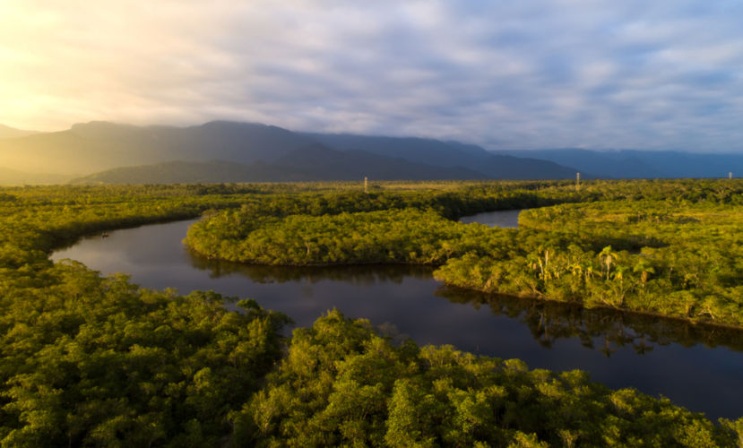
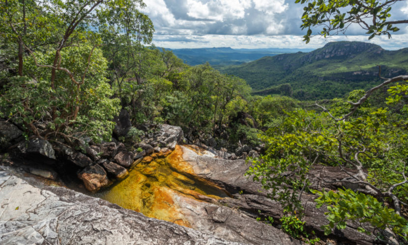
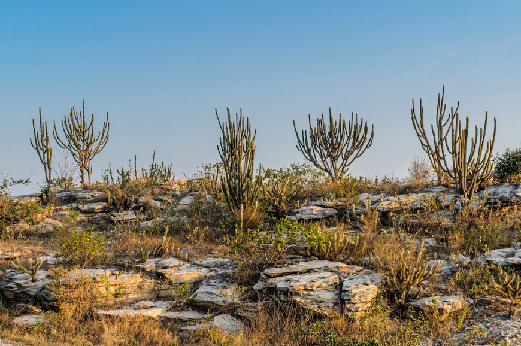
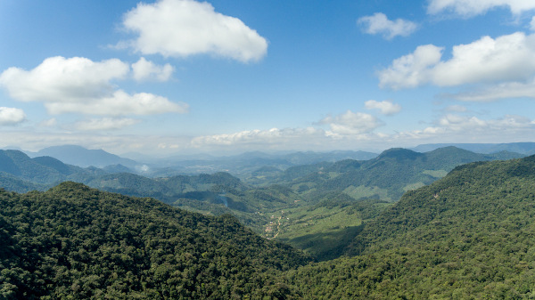
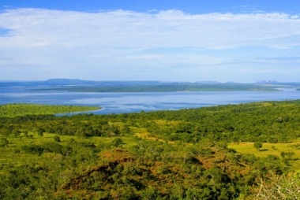
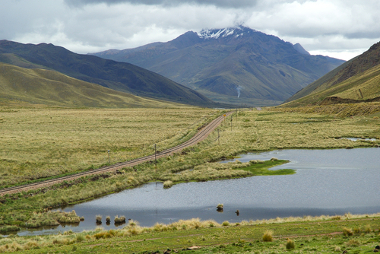

Biomas brasileiros são regiões que compreendem grandes ecossistemas constituídos por uma comunidade biológica com características semelhantes.
Segundo o Instituto Brasileiro de Geografia e Estatística (IBGE), o Brasil possui seis biomas:
No bioma Amazônia, encontra-se a maior floresta tropical do mundo(Floresta Amazônica). É o maior de todos os biomas e este bioma possui a maior bacia
hidrográfica do mundo: Bacia Amazônica que détem 20% da água doce do planeta.
Os principais representantes da fauna são onça-pintada, boto-cor-de-rosa, arara-azul, capivara, tatu e cobras, como a cascavel e a jararaca.
Com relação a flora local, existem cerca de 30 mil espécies das quase 100 mil existentes na América Latina com destaque para a Vitória-Régia.
O clima da região é quente e úmido, apresentando umidade do ar elevada todo ano. E a vegetação do bioma Amazônia divide-se em: mata de terra
firme, mata de várzea e mata de igapó.

O Bioma Cerrado é conhecido como a savana brasileira, sendo o segundo maior bioma do país e também o segundo maior bioma da América do Sul.
Constitui
uma área de aproximadamente 2.036.448 km2, representando cerca de 23,9% do território brasileiro.
A fauna do Cerrado é representada pelo lobo-guará, tucano, tamanduá-bandeira, onça-parda, veado-campeiro, entre outros. Com relação a flora local
ela é representada por ipês, barbatimão, jatobá, pequi, cagaita, entre outras espécies.
O clima predominante nesse bioma é o tropical sazonal Apresenta duas ao longo do ano de 25 ºC. Com relação a vegetação, as espécies variam entre
vegetações arbóreas, arbustivas e cipós; uma das características de identificação desse bioma está relacionada á sua coloração.

O bioma Caatinga representa cerca de 9,9% do território brasileiro, com uma área de aproximadamente 844.453 km2, além disso, a Caatinga é o único
bioma exclusivamente brasileiro
A fauna e a flora do Cerrado apresentam diversas espécies endêmicas (que existem apenas nessa região). A Fauna é representada por animais como:
o jacaré-do-papo-amarelo, jiboia, ararinha-azul, tatu-peba, macaco-prego, cotia, entre outros; A Flora é representada por espécies como o Mandacaru
Juazeiro, umbu, xiquexique, bromélias, macambira, entre outras.
O clima predominante da Caatinga é o semiárido, responsável por inúmeras características particulares desse bioma, por isso a vegetação da
Caatinga é adaptada ao clima seco, característica conhecida como xeromorfismo. As plantas apresentam mecanismos de armazenamento de água,
á fim de que sobrevivam aos longos períodos de seca.

bioma Mata Atlântica possui cerca de 1.110.182 km2, ocupando aproximadamente 13% do território brasileiro. Esse bioma estende-se por quase todo o litoral
do Brasil. Devido a colonização do Brasil esse bioma passou e passa por um intenso processo de desmatamento, restando cerca de 10% da mata nativa.
A fauna da Mata Atlântica é representada por espécies como tucanos, onças-pintadas, bichos-preguiça, micos, entre outros. Já a Flora é representada
por espécies como flor-do-campo e bromélias e conta com cerca de 20 mil espécies de vegetais, sendo cerca de 8 mil endêmicas.
O clima predominante na Mata Atlântica é o tropical úmido. As temperaturas normalmente são elevadas, apresentando também altos índices pluviométricos
Já a Vegetação é constituida por floresta tropical, repleta de fitofisionomias como mangues, restingas e florestas ombrófilas(vegetação de folhas
largas e perenes)

O bioma Pantanal possui uma área de aproximadamente 150.355 km2, ocupando cerca de 1,8% do território brasileiro. É considerado uma das maiores
planícies alagadas do mundo, devido ao seu terreno plano, e é o menor bioma do país em extensão territorial.
A Fauna do Pantanal é representada por espécies como o cervo-do-pantanal, jacaré-do-pantanal e o tuiuiú. A flora do Pantanal é representada
pela vitória-régia, aguapé, orquídea, entre outras.
O clima que predomina no Pantanal é o tropical, com características de continentalidade, quente e úmido. Há na região compreendida pelo
Pantanal diversos tipos de vegetação(cerradões, matas, savanas e brejos.)

O bioma Pampa é uma região de planícies, Abrange uma área de 176.496 km2, ocupando cerca de 2,1% do território brasileiro e é encontrado
apenas no estado do Rio Grande do Sul
A fauna é representada por espécies como veado-campeiro, preá. ema, perdiz, entre outras. A flora é representada por espécies como
a babosa-do-campo, trevo-nativo e grama-tapete.
O clima predominante no bioma Pampa é o temperado, com características de subtropical frio. A vegetação do Pampa é constituida por
gramíneas, em sua maioria. Apresenta vegetação campestre uniforme e dois tipos de fitofisionomias: campos limpos(arbustos) e
campos sujos(sem a presença de arbustos)

Mapa mental dos Biomas Brasileiros